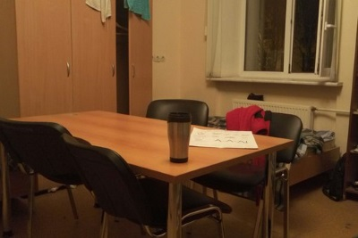
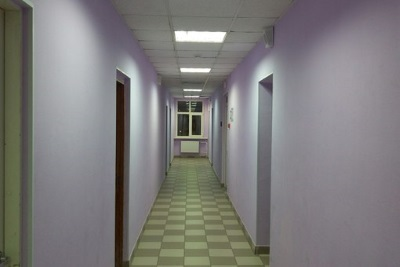

Страшные мифы
Общежитие Сколько теплых воспоминаний способно возродить в душе каждого, кто прожил здесь достаточно много, такое одно лишь слово, но в данной статье мы попытаемся развеять мифы об общежитии, которые могут быть у поступающих сюда.
Реакция большинства на слово "общага" строго отрицательная, ведь на ум обычно приходят слухи об армиях тараканов, ужасных условиях жизни, плесени в душевых и прочих ужасах. Возможно в СУНЦе вас отпугивает именно этот ужасающий образ общаги. На самом деле, этот миф достаточно прост, СУНЦ — не идеальное место для жизни, где будет абсолютно все и в достатке, но при этом все необходимое для жизни у вас будет, а если чего-то не хватает, то можно и с собой привезти. Тараканов или же других насекомых за два года почти не замечал, так что уверяю, с этим проблем в СУНЦе нет.
Этот миф достаточно сильно распространен, но при этом, в СУНЦе вы можете не волноваться ни о чем, за два года я слышал лишь об одном случае, да и тот был решен достаточно быстро и радикально(отчисление вора), в плюс ко всему, после того, как поставили камеры, вероятность быть обворованным уменьшается, так что этот миф имеет очень мало общего с реальностью, вы можете не бояться.
Как человек, проживший здесь два года, могу сказать, что контроль в СУНЦе реализован крайне слабо. Да, вы можете получить выговор, но при этом смотреть за каждым вашим шагом и ограждать вас от всего опасного никто не собирается.
Заблуждения
Праздник каждый день. Возможно, именно это вы представляете у себя в голове, когда слышите про обшагу, что же, новая статья рассмотрит и этот миф об общежитиях.
Все же, СУНЦ ближе к ВУЗу, чем школа, поэтому, ученики здесь уже скорее студенты нежели школьники. При упоминании студентов, нередко можно услышать такие фразы: «Бедненькие! Не наедаетесь, наверное». Что же, после двух лет в СУНЦе я могу сказать достаточно точно, жить, питаясь только в столовой вполне возможно(этому способствует то, что на одном приеме пищи вы можете проходить несколько раз), но в магазин вы ходить все равно скорее всего будете, потому в плане вкусовых ощущений вам всегда будет чего-то не хватать, да, ситуация со столовой значительно улучшается со временем, но идеала не достигнуть никогда.
Так как кто-то учится в СУНЦе на год больше других, то понятно, что есть два потока людей: "старики" и "мелкие". "Старики" обладают некоторой специфической властью над так называемыми "мелкими", но это далеко не армейская дедовщина, тут скорее происходит передача опыта от одного поколения другому, а злоупотребление властью не происходит, потому что разница всего в один год позволяет общаться людям на равных.